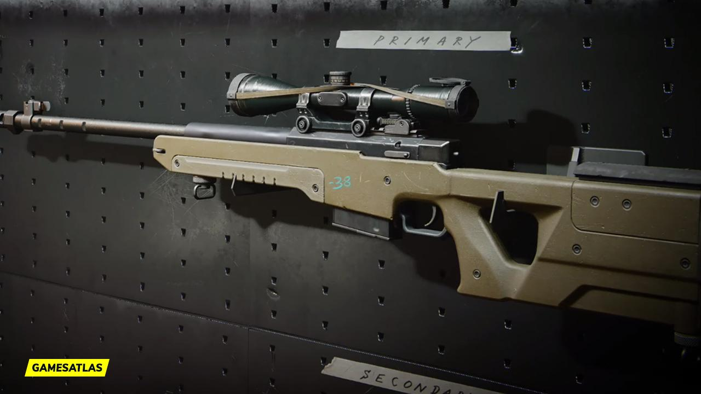

The LW3-Tundra is one of the most popular sniper rifles in Call of Duty: Mobile, known for its incredible one-shot potential and reliable accuracy. Introduced in the 2024 Season 1 update, it quickly became a favorite among both casual players and competitive snipers. Its fast handling, consistent hit registration, and high damage make it an excellent choice for quickscoping and aggressive sniper gameplay.
One of the biggest strengths of the LW3-Tundra is
depending on their preferred playstyle.
Whether you're playing Ranked Multiplayer, Search & Destroy, or simply practicing your sniping skills, the LW3-Tundra remains one of the strongest sniper options in CODM. Its satisfying feel, powerful stopping ability, and smooth animations have earned it a loyal fan base. Even after balance adjustments, the weapon continues to dominate in the hands of experienced players and is widely regarded as one of the best sniper rifles available in the game.